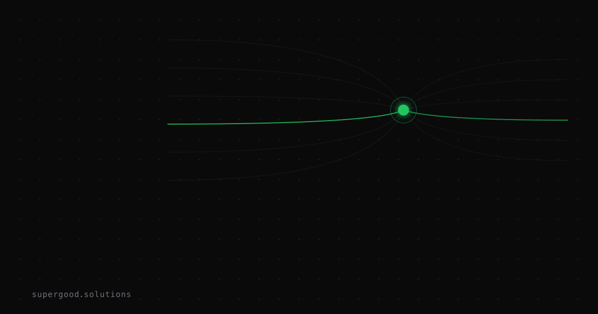

What a Context Window Is and Why Your AI "Forgets"
TL;DR: An AI model has no memory of yesterday. It reads only what is on its whiteboard right now, and the size of that whiteboard decides why long documents go sideways and why chatbots lose the thread.
Key Insight
Picture a very sharp consultant who is walked into a conference room with a whiteboard. Everything they know about your project is what is written on that board: your instructions, the chat so far, any files you pasted, and the answer they are drafting. When the board fills up, someone has to erase something. That board is the context window.
When a chatbot seems to remember you, the application around the model is doing the remembering. Each time you send a message, the app re-sends the whole conversation, and the model reads it from the top like a stranger. Nothing is stored inside the model between turns. Once the transcript outgrows the board, the app drops the oldest messages or squeezes them into a summary, and that is the moment the bot "forgets" what you told it an hour ago.
Board size is counted in tokens, which are chunks of text a little shorter than a word. A page of plain text runs roughly 500 to 700 tokens. Today's models advertise windows from a couple hundred thousand tokens to over a million, so "it doesn't fit" is rarer than it used to be.
A bigger board does not mean the model reads all of it equally well. Chroma tested 18 models, including GPT-4.1, Claude 4 and Gemini 2.5, on deliberately simple tasks and found every one got less reliable as the input grew, long before the window was full. The earlier "Lost in the Middle" paper found models do best when the relevant fact sits at the start or end of the input and worse when it is buried in the middle. The window tells you what you can pass in. It does not tell you what will be reliably read.
Why Teams Miss This
Most teams meet the context window through a demo. Someone pastes a 200-page contract into a chat, the model summarizes it, and everyone nods. The demo works because the question was easy and nobody in the room knew the two places where the summary was wrong.
Three assumptions come out of that demo, and each one breaks in production:
- "It will remember our last session." It won't. Cross-session memory is a feature your team has to build, usually by saving notes and feeding them back in next time.
- "If it fits, it works." Fitting is a hard limit. Working well is a soft one, and it degrades as you fill the board with material the question does not need.
- "More context is safer." Extra documents add noise. A model asked about your refund policy can latch onto a similar-looking policy you pasted in next to it.
There is a billing surprise too. You pay for tokens on every turn, and a long chat re-sends its entire history each time. A 40-message conversation costs far more than 40 separate questions.
How to Actually Do It
Treat the window as a budget you spend on purpose, not a bucket you fill.
- Measure before you trust. Plant one known fact in the middle of a realistic document and ask for it back. If your model misses it at your real document size, you have found your working limit.
- Retrieve instead of paste. For a policy library, search first and send only the three or four relevant passages. A small, clean board beats a huge, cluttered one.
- Put the important material at the edges. Instructions and the key facts go at the start or the end, not the middle.
- Summarize on a schedule. For long-running chats, have the app write a short running summary and carry that forward instead of the raw transcript.
- Log token counts per request so finance sees cost growth before the invoice does.
Here is a small check you can hand to an engineer. Swap in your own model call for the placeholder:
import random
NEEDLE = "The refund window for annual plans is 45 days."
FILLER = "This sentence is neutral filler about unrelated company topics. "
def build_prompt(filler_sentences: int, position: float) -> str:
chunks = [FILLER] * filler_sentences
chunks.insert(int(len(chunks) * position), NEEDLE + " ")
return "".join(chunks) + "\n\nWhat is the refund window for annual plans?"
for size in (200, 2000, 20000):
for pos in (0.0, 0.5, 1.0):
prompt = build_prompt(size, pos)
answer = ask_model(prompt) # your model call here
print(size, pos, "45" in answer)What We've Learned
The failures we see most are not "the document was too long." They are quiet. A model answers confidently from the wrong paragraph. This week, pick one workflow where your team pastes long material into an AI, run the needle check above at your real document size, and write down the size where recall starts to slip. That number is your actual limit, and it is usually lower than the one on the vendor's spec sheet.
Sources
- Chroma Research, Context Rot: How Increasing Input Tokens Impacts LLM Performance: Context Rot study
- Liu et al., Lost in the Middle: How Language Models Use Long Contexts: arXiv 2307.03172
- Anthropic documentation on how context windows work: Context windows
Have a specific workflow in mind?
Bring it to a Quick Scan — a live working session where we'll tell you honestly whether it should be an agent, a workflow, or left alone, before you spend a dollar building it. You get 3 prioritized recommendations on the call, a one-page summary after, and the $500 credited toward any engagement within 30 days.
Get new posts + practical agent-ops notes
One email when something new goes up. No nurture sequence, no spam — unsubscribe whenever you want.